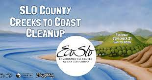

Over 50 years ago four separate pollution events occurred in San Luis Obispo Creek in downtown SLO. Cal Poly biologists and students investigated, discovering thousands of dead fish and a severely damaged ecosystem. Their efforts to protect this local creek led to the creation of the Environmental Center of San Luis Obispo - ECOSLO!
In November 1971 we opened the first recycling center in SLO County. In February 1972 ECOSLO officially became recognized as a 501(c)(3) nonprofit, dedicated to protecting and preserving SLO County's natural resources.
If you want to make a difference in your community, be a part of something bigger than yourself, or just need to earn some required volunteer hours, then this is the place to start.
How many events are being held each year?
The data in the graph displays the amount of events held each year starting in 2014 to 2022. From 2014 to 2018, organized beach cleanups gradually increased and reached a peak with a little over 50 events in 2018. In 2019, the lack of data provides little intel on cleanups that year. The following years, Covid-19 struck the world and caused a nation-wide shut down. This lead to events happening much later in 2020 and held less events to be safer about the spread of the virus. This would follow into 2021 as well, but there was an increase as safety measure had already been put in place. 2022 includes data up to August 1st, so making inferences from the graph doesn't display data in full.
How has the amount of trash and recycling changed over the years? Are more recent cleanup events removing more or less trash?
The graph above depicts the overall weight of trash and recycling picked up from sites over the years 2014 to 2022. The blue represents the weight of trash accumulated, while the orange represents the weight of recycling from all events of the year. In general, the trash of weight is at least 50% more than the weight of recycling as shown in the graph. From 2014 to 2018, there is a slight increase of the total weight, where 2018 peaks with a total of about 5,600 pounds of trash and recycling. There is no data in 2019, but 2020 shows that the weight of trash outweighs the weight of recycling. After 2020, there is a drastic decrease in the weight of trash and recycling, which may be due to the lack of events following the pandemic of COVID-19.
How has the number of volunteers changed over time?
The given graph is a represenation of the average number of children and adult volunteers over time. The orange line represents volunteers who are Children and the blue line represents volunteers who are adults. Due Covid-19 the number of volunteers was at a stagnant and huge spike occured after events started. In general there is a higher number of adults volunteers that children. The number of children volunteers remains neutral throughout the years with not much varying gradient.
FRONT DESK
SUNDAY - THURSDAY (8:00 AM TO 6:00 PM)
PHONE INQUIRIES CALL: (805) 756-1111
EMAIL: ECO.SLO@gmail.com